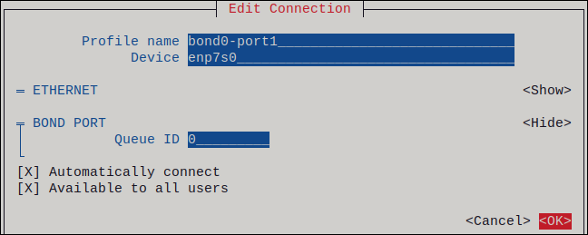
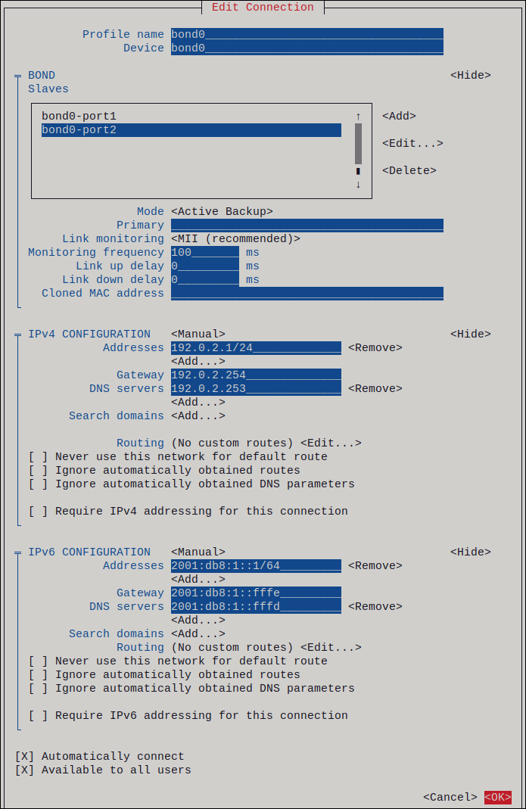

Two or more physical or virtual network devices are installed on the server.
To use Ethernet devices as ports of the bond, the physical or virtual Ethernet devices must be installed on the server.
The nmtui application provides a text-based user interface for NetworkManager. You can use nmtui to configure a network bond on a host without a graphical interface.
Note:
In nmtui:
Navigate by using the cursor keys.
Press a button by selecting it and hitting Enter.
Select and clear checkboxes by using Space.
To return to the previous screen, use ESC.
If you do not know the network device names on which you want configure a network bond, display the available devices:
# nmcli device status
DEVICE TYPE STATE CONNECTION
enp7s0 ethernet unavailable --
enp8s0 ethernet unavailable --
...
Start nmtui:
# nmtui
Select Edit a connection, and press Enter.
Press Add.
Select Bond from the list of network types, and press Enter.
Optional: Enter a name for the NetworkManager profile to be created.
On hosts with multiple profiles, a meaningful name makes it easier to identify the purpose of a profile.
Enter the bond device name to be created into the Device field.
Add ports to the bond to be created:
Press Add next to the Ports list.
Select the type of the interface you want to add as a port to the bond, for example, Ethernet.
Optional: Enter a name for the NetworkManager profile to be created for this bond port.
Enter the port’s device name into the Device field.
Press OK to return to the window with the bond settings.
Adding an Ethernet device as a port to a bond

Repeat these steps to add more ports to the bond.
Set the bond mode. Depending on the value you set, nmtui displays additional fields for settings that are related to the selected mode.
Depending on your environment, configure the IP address settings in the IPv4 configuration and IPv6 configuration areas accordingly. For this, press the button next to these areas, and select:
Disabled, if the bond does not require an IP address.
Automatic, if a DHCP server or stateless address autoconfiguration (SLAAC) dynamically assigns an IP address to the bond.
Manual, if the network requires static IP address settings. In this case, you must fill further fields:
Press Show next to the protocol you want to configure to display additional fields.
Press Add next to Addresses, and enter the IP address and the subnet mask in Classless Inter-Domain Routing (CIDR) format.
If you do not specify a subnet mask, NetworkManager sets a /32 subnet mask for IPv4 addresses and /64 for IPv6 addresses.
Enter the address of the default gateway.
Press Add next to DNS servers, and enter the DNS server address.
Press Add next to Search domains, and enter the DNS search domain.
Example of a bond connection with static IP address settings

Press OK to create and automatically activate the new connection.
Press Back to return to the main menu.
Select Quit, and press Enter to close the nmtui application.
Temporarily remove the network cable from one of the network devices and check if the other device in the bond is handling the traffic.
Note that there is no method to properly test link failure events using software utilities. Tools that deactivate connections, such as nmcli, show only the bonding driver’s ability to handle port configuration changes and not actual link failure events.